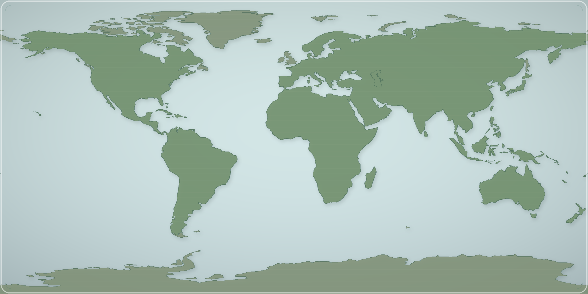
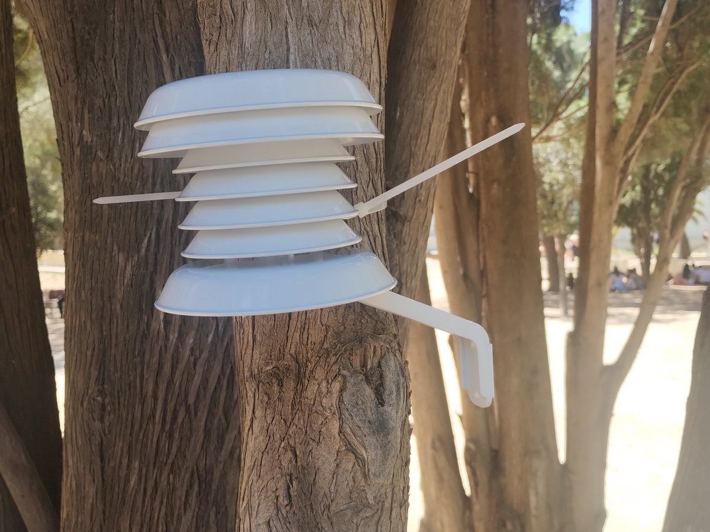
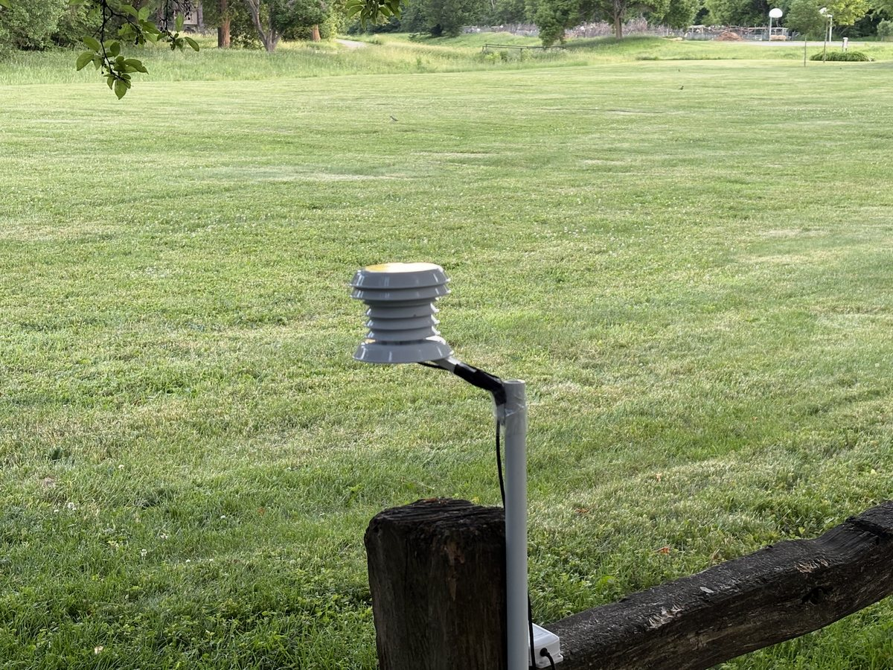
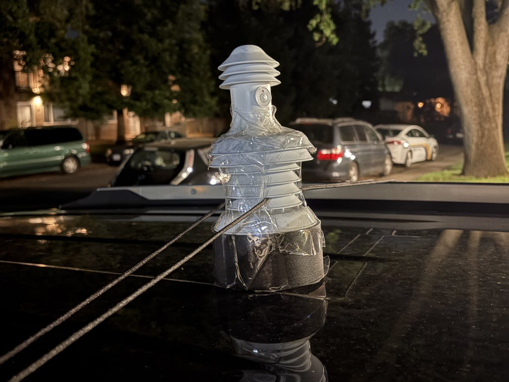
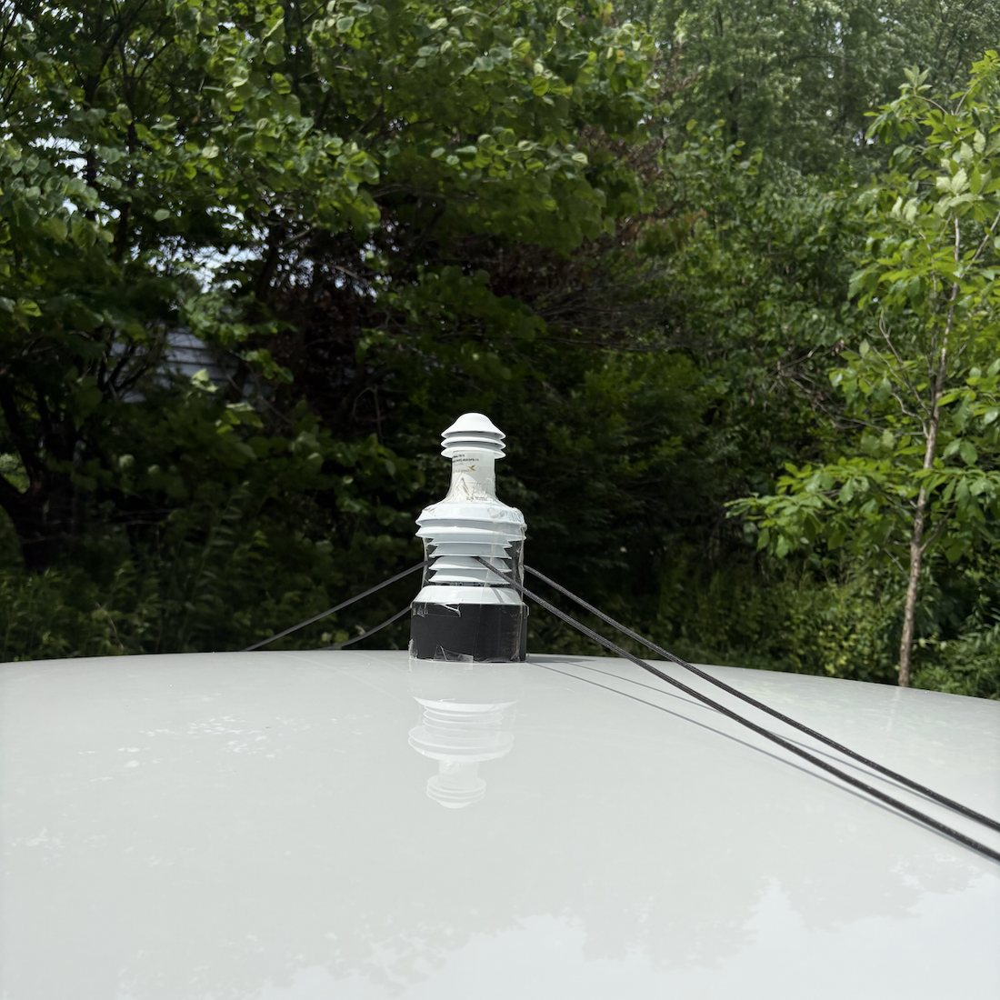
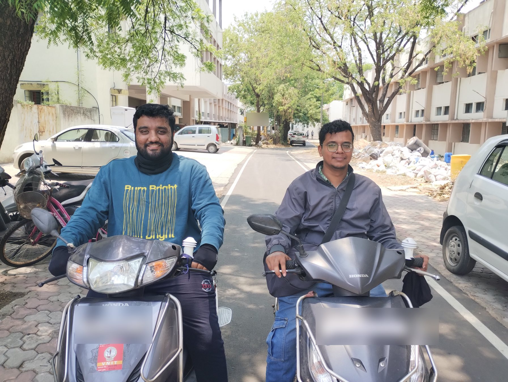
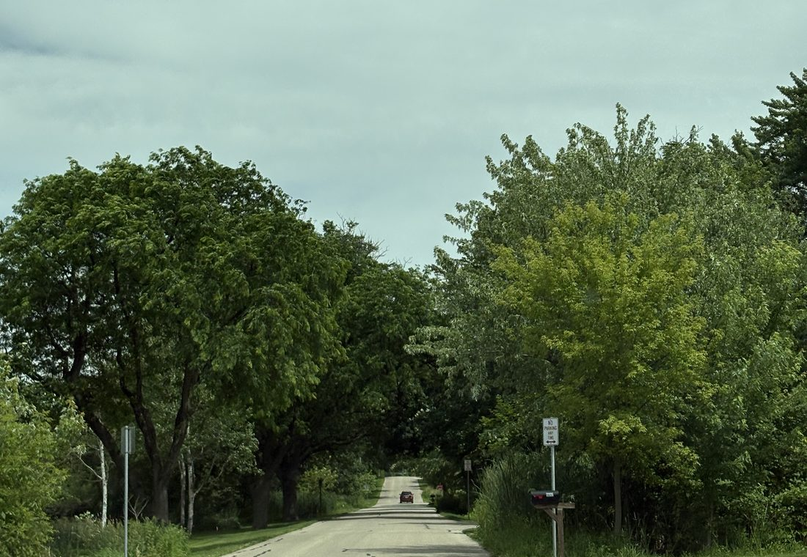
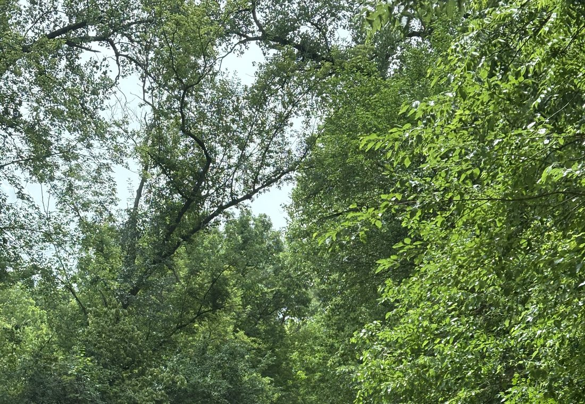
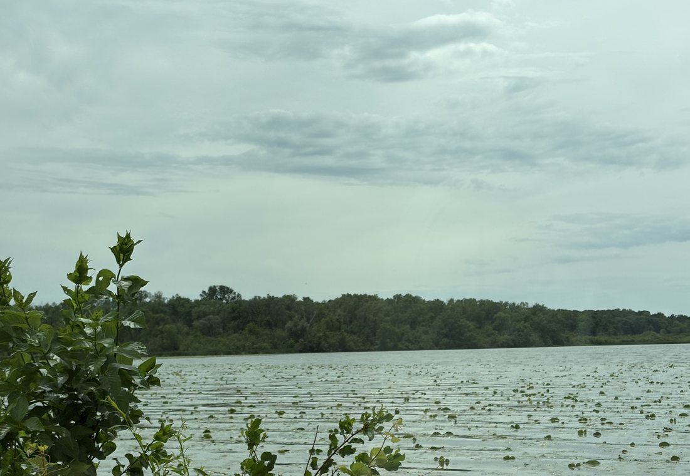

Public health motivation
Heat and humidity are serious urban stressors. Their impacts are hard to understand with city-wide weather stations alone because conditions can shift block by block.
Field measurements for livable cities
Our lab uses mobile weather sensors and fixed reference stations to understand how temperature, humidity, shade, water, roads, and buildings shape the air people feel from block to block.
Weather stations tell us what a city feels like in general. Mobile measurements help reveal what changes along real streets: a shaded block, a busy corridor, a park, a waterfront, a residential neighborhood, or a downtown canyon.
The project connects field measurements with city questions about heat, humidity, shade, water, and urban form.
This vehicle-based project focuses on urban heat and humidity.
Heat and humidity are serious urban stressors. Their impacts are hard to understand with city-wide weather stations alone because conditions can shift block by block.
Current fieldwork uses a car-mounted Smart-T sensor to measure air temperature and humidity along planned transects, paired with fixed reference observations.
Repeated observations create summaries that can be compared across cities.
Project support
The project is supported by a grant from the Robert Wood Johnson Foundation and a Leitner Award for Uncommon Collaboration.
The map shows city-level project locations, including field contexts in North America, Europe, the Global South, and China.

Mobile and fixed sensors make street-scale heat easier to compare.
A compact sensor records air temperature and humidity while a vehicle follows a planned transect through different urban environments.
A stationary logger tracks background conditions, so we can separate broad weather changes from local street-scale contrasts.
Repeated trips are checked and summarized for discussion with partners.
Across locations, the same framework helps test how local climate, urban form, and field conditions shape heat exposure.
Humidity changes how efficiently the body can cool itself through evaporation. By measuring both air temperature and humidity, the project can discuss humid heat and compare urban conditions across different climates.
Moist air can make the same temperature feel more stressful because sweat evaporates less efficiently.
Vegetation, water, land cover, and built form can shape moisture as well as air temperature.
Temperature and humidity can offset or reinforce each other, so fixed and mobile observations help separate background change from local contrasts.
Fixed sensors and vehicle-mounted sensors answer different parts of the same field question: what is changing through time, and what is changing from place to place?
Fixed observations
HOBO-style fixed sensors record temperature and humidity at selected local settings during the field period. They help separate city-wide weather changes from street-scale contrasts observed by the mobile sensor.


Mobile observations
A compact Smart-T setup can travel with cars or motorcycles during repeated transects. The mobile observations add spatial context across neighborhoods, road types, shade, buildings, and water-adjacent environments.



Transects are designed to sample broad setting types such as suburban streets, downtown corridors, forested shade, and water-adjacent edges.



The project works best with collaborators who can connect field measurements to real urban questions: heat risk, tree shade, waterfront effects, public health, transport corridors, neighborhood planning, or climate adaptation.
Neighborhood knowledge, route planning, permissions, and interpretation.
Safe transects, fixed reference placement, and repeated observations.
Practical problems where fine-scale heat and humidity measurements can help.
Faculty lead
Sara Shallenberger Brown Professor of Climate Science, Yale School of the Environment
Project contact
Contact for collaboration questions about the mobile measurement project.